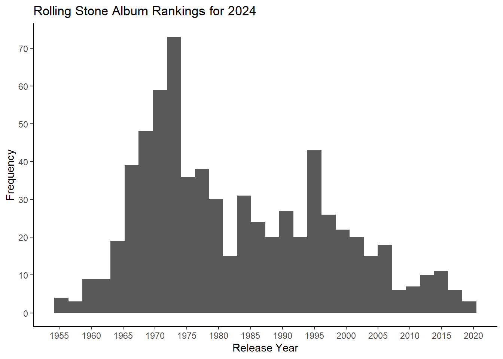
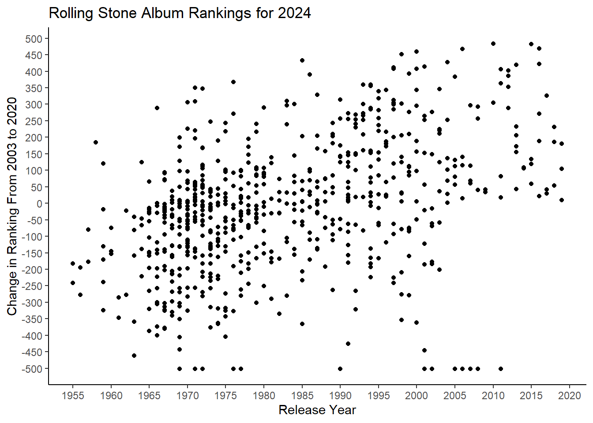
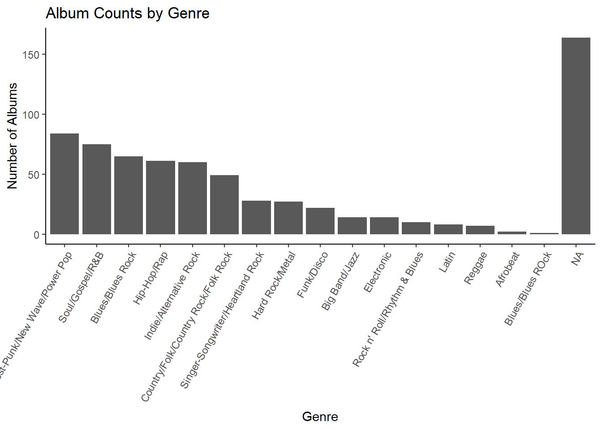
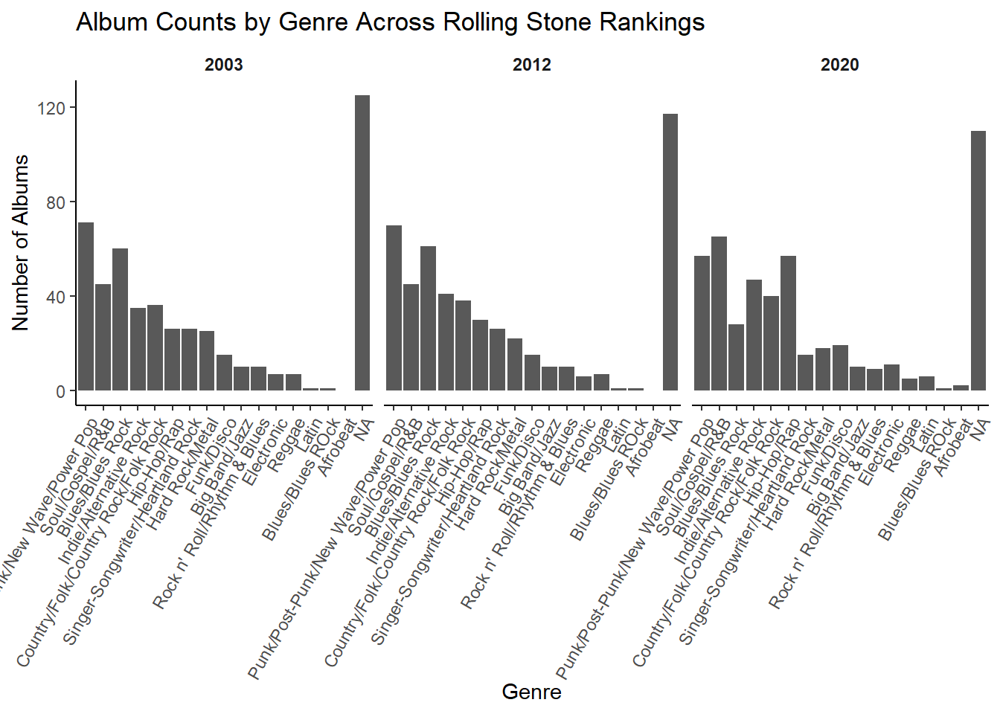
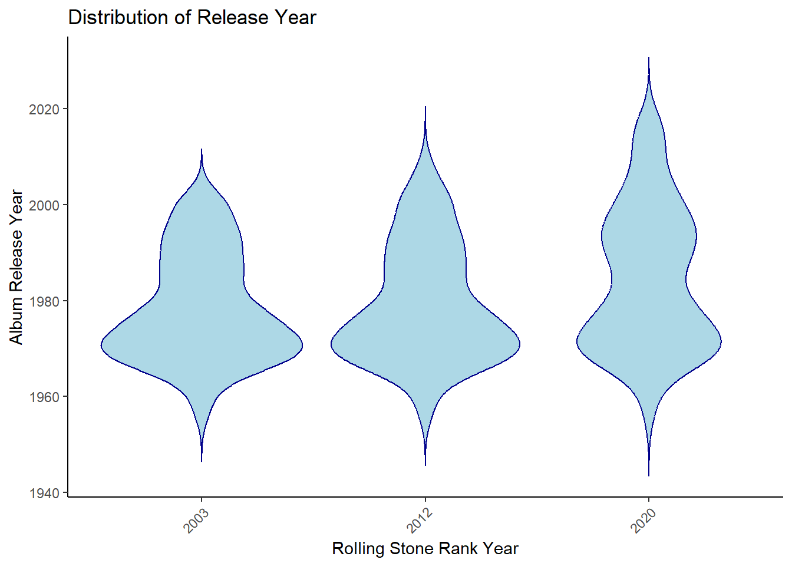

#libraries
library(tidytuesdayR)## Warning: package 'tidytuesdayR' was built under R version 4.4.3library(tidyverse)## Warning: package 'tidyverse' was built under R version 4.4.3## Warning: package 'ggplot2' was built under R version 4.4.3## Warning: package 'purrr' was built under R version 4.4.3## ── Attaching core tidyverse packages ──────────────────────── tidyverse 2.0.0 ──
## ✔ dplyr 1.1.4 ✔ readr 2.1.5
## ✔ forcats 1.0.0 ✔ stringr 1.5.1
## ✔ ggplot2 3.5.2 ✔ tibble 3.2.1
## ✔ lubridate 1.9.4 ✔ tidyr 1.3.1
## ✔ purrr 1.0.4
## ── Conflicts ────────────────────────────────────────── tidyverse_conflicts() ──
## ✖ dplyr::filter() masks stats::filter()
## ✖ dplyr::lag() masks stats::lag()
## ℹ Use the conflicted package (<http://conflicted.r-lib.org/>) to force all conflicts to become errorslibrary(ggplot2)
library(forcats)#RollingStone Data For this portfolio, i am exploring the tidytuesday data on Rolling Stone Album Rankings.
Might analyze something about how from 2003, 2012, and then 2020 there are shifts in which albums are included??? possible changes in release_year or genre or spotify popularity
rolling_stone <- readr::read_csv('https://raw.githubusercontent.com/rfordatascience/tidytuesday/main/data/2024/2024-05-07/rolling_stone.csv')## Rows: 691 Columns: 21
## ── Column specification ────────────────────────────────────────────────────────
## Delimiter: ","
## chr (8): sort_name, clean_name, album, genre, type, spotify_url, artist_gen...
## dbl (13): rank_2003, rank_2012, rank_2020, differential, release_year, weeks...
##
## ℹ Use `spec()` to retrieve the full column specification for this data.
## ℹ Specify the column types or set `show_col_types = FALSE` to quiet this message.#convert to long
rolling_stone_long <- rolling_stone %>%
pivot_longer(
cols = starts_with("rank_"),
names_to = "rs_year",
names_prefix = "rank_",
values_to = "rank"
) %>%
filter(!is.na(rank)) %>%
mutate(rs_year = as.integer(rs_year))#Link to variable info https://github.com/rfordatascience/tidytuesday/blob/main/data/2024/2024-05-07/readme.md
rolling_stone %>%
ggplot(aes(x = release_year)) +
geom_histogram() +
scale_x_continuous(breaks = seq(1950, 2020, by = 5)) +
scale_y_continuous(breaks = seq(0, 100, by = 10)) +
labs(title = "Rolling Stone Album Rankings for 2024",
x = "Release Year",
y = "Frequency") +
theme_classic()## `stat_bin()` using `bins = 30`. Pick better value with `binwidth`.
##diff by year
rolling_stone %>%
ggplot(aes(x = release_year, y = differential)) +
geom_point() +
scale_x_continuous(breaks = seq(1950, 2020, by = 5)) +
scale_y_continuous(breaks = seq(-500, 500, by = 50)) +
labs(title = "Rolling Stone Album Rankings for 2024",
x = "Release Year",
y = "Change in Ranking From 2003 to 2020") +
theme_classic()
rolling_stone %>%
mutate(genre = fct_infreq(genre)) %>%
ggplot(aes(x = genre)) +
geom_bar() +
theme_classic() +
theme(axis.text.x = element_text(angle = 60, hjust = 1)) +
labs(x = "Genre", y = "Number of Albums", title = "Album Counts by Genre")
rolling_stone_long %>%
mutate(genre = fct_infreq(genre)) %>%
ggplot(aes(x = genre)) +
geom_bar() +
facet_wrap(~rs_year) + # Facet by year (e.g., 2003, 2012, 2020)
theme_classic() +
theme(
axis.text.x = element_text(angle = 60, hjust = 1),
strip.background = element_blank(),
strip.text = element_text(face = "bold")
) +
labs(
x = "Genre",
y = "Number of Albums",
title = "Album Counts by Genre Across Rolling Stone Rankings"
)
genre_table <- rolling_stone_long %>%
count(rs_year, genre) %>%
pivot_wider(names_from = rs_year, values_from = n, values_fill = 0)
print(genre_table)## # A tibble: 17 × 4
## genre `2003` `2012` `2020`
## <chr> <int> <int> <int>
## 1 Big Band/Jazz 10 10 10
## 2 Blues/Blues ROck 1 1 1
## 3 Blues/Blues Rock 60 61 28
## 4 Country/Folk/Country Rock/Folk Rock 36 38 40
## 5 Electronic 7 6 11
## 6 Funk/Disco 15 15 19
## 7 Hard Rock/Metal 25 22 18
## 8 Hip-Hop/Rap 26 30 57
## 9 Indie/Alternative Rock 35 41 47
## 10 Latin 1 1 6
## 11 Punk/Post-Punk/New Wave/Power Pop 71 70 57
## 12 Reggae 7 7 5
## 13 Rock n' Roll/Rhythm & Blues 10 10 9
## 14 Singer-Songwriter/Heartland Rock 26 26 15
## 15 Soul/Gospel/R&B 45 45 65
## 16 <NA> 125 117 110
## 17 Afrobeat 0 0 2genre_table <- genre_table %>%
mutate(diff_2003_2020 = `2020` - `2003`)##violin_year
ggplot(rolling_stone_long, aes(x = as.factor(rs_year), y = release_year)) +
geom_violin(trim = FALSE, fill = "lightblue", color = "darkblue") + # Create the violin plot
theme_classic() + # Use a clean theme
labs(
x = "Rolling Stone Rank Year", # Label for x-axis
y = "Album Release Year", # Label for y-axis
title = "Distribution of Release Year"
) +
theme(
axis.text.x = element_text(angle = 45, hjust = 1) # Rotate x-axis labels for readability
)